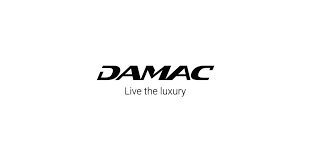
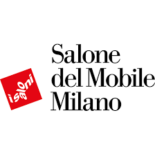

The invisible quality link on a construction site
When a client visits a completed project, they see finishes, volumes, light. What they do not see is the supply chain that made this result possible: the cement whose compressive strength meets the specified class, the aluminum joinery whose seals conform to local climate tolerances, the electrical wiring whose cross-section actually matches the load schedule.
In Ivory Coast and West Africa, the construction materials market is fragmented. Quality gaps between suppliers can reach significant proportions on the same product. A rebar of identical stated cross-section can show resistance variations of 15 to 25% depending on the distributor. It is in this grey area that the real quality of a building is determined.
The 4 levers activated by a reliable partner network
Material conformity
Working with referenced suppliers — such as SOTACI for steel, Abeille Beton for precast elements or Batiplus for finishes — guarantees traceability and consistency that the informal market cannot offer. On a G+2 building, this conformity makes the difference between a structure that ages well and one that cracks within 3 years.
Schedule compliance
A tile delivery delay pushes back installation, which delays painting, which delays handover. On a 6-month project, one week of delay on a critical trade can generate 2 to 3 weeks of overall schedule drift. A reliable partner delivers on time — and flags upstream when an issue arises.
Budget control
Established partners offer stable commercial conditions: negotiated rates, volume discounts, predictable payment terms. This stability enables reliable execution budgets and reduces the gap between forecast and actual — a critical concern for client confidence.
Technical support
The best suppliers do not just deliver. They advise on installation methods, flag incompatibilities and train field teams when needed. SOGELEC for electrical installations or resin partners for technical floors bring expertise that strengthens execution quality.
The JERU approach: building an ecosystem, not a supplier list
At JERU GROUP, we do not treat sourcing as a simple purchasing function. We build an ecosystem of technical partners whose reliability is tested project after project. Each partner is evaluated on four criteria: product conformity, schedule compliance, price stability and technical support quality.
This approach allows us to work in Ivory Coast as well as Burkina Faso with the same level of standards. On the duplex villa project in Akouedo, coordination with our partners delivered interior finishes 10 days ahead of the original schedule — a direct result of the reliability of the network deployed.
What the client concretely gains
A reliable partner network produces three concrete outcomes for the client: a final budget closer to the initial budget (average variance reduced to under 8%), a respected delivery timeline (compliance rate above 90% on our documented projects) and a finish quality that does not require remedial work in the 12 months following handover.
These results are not accidental. They are the product of selection, coordination and monitoring work that JERU carries out upstream and during each project. It is this invisible work that makes the visible result possible.
JERU GROUP technical partners and suppliers
A network selected, evaluated and deployed project after project to guarantee conformity, timelines and execution quality.
 SOTACI
SOTACI Abeille Béton
Abeille Béton Batiplus
Batiplus SOGELEC
SOGELEC Ciment Bélier
Ciment Bélier Sodimas
Sodimas SOCIAM
SOCIAM Batipro
Batipro Le Bâtisseur
Le Bâtisseur
DAMAC Lifestyle
Lifestyle
Salone del MobileSOTACIAbeille BétonBatiplusSOGELECCiment BélierSodimasSOCIAMBatiproLe BâtisseurLifestyle